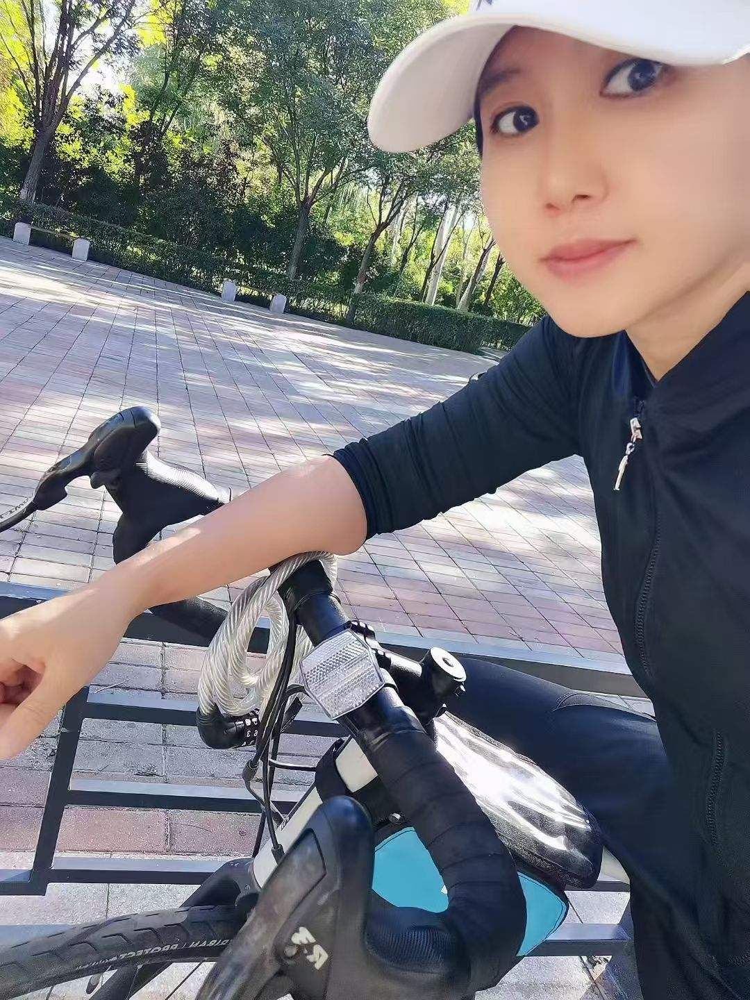
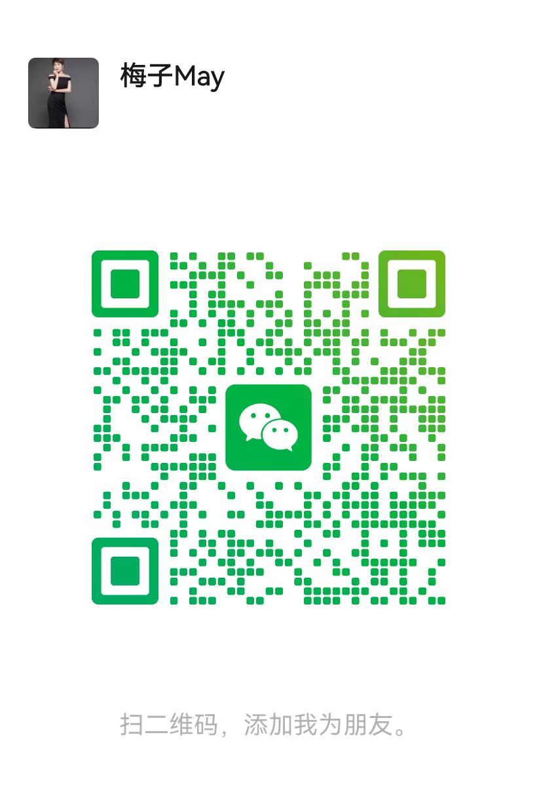

内容中心
把思考写下来，也把实践留下来。
文章持续补充中。点击卡片阅读已发布的初稿，后续可在 articles/ 目录中继续新增你的真实内容。
经营自己，也经营企业
有互联网创业经验的 AI 时代实践者
我关注两件事：帮助传统企业梳理线上展示与获客问题；通过长期运动和自我管理，探索更健康、更有主动权的生活。
不是包装出来的专家，而是一个把过去 17 年创业经历，重新放进 AI 时代的人。

2009 年，我开始互联网创业。那时，我通过 SEO 搜索优化 帮助商业冰柜相关业务获得线上机会，也赚到了人生第一桶金。
后来，我经历了事业的起伏。现在，我重新走进 AI 时代，希望把过去对互联网和企业经营的理解，与今天的新工具结合起来。
我不想只追逐热点，也不想把复杂的 AI 概念讲得很热闹。我更关心实际问题：
一家企业的产品和优势，客户能不能找到？能不能看懂？能不能产生信任？最后有没有方便的咨询入口？
我希望从这些具体问题出发，和企业一起测试、行动、复盘、调整。
与此同时，我也一直在经营自己。长期晨跑、坚持运动、持续学习，让我越来越相信：无论经营企业还是经营人生，都需要了解自己、持续行动，并根据真实结果调整方向。
这就是我想做「鸿雁归巢」的原因。
面向传统企业、实体店、农牧与食品企业：从「客户能不能找到你」这个真实问题开始。
这是我和企业一起工作的方式，不是已经被大量客户验证过的成熟系统，而是在真实合作中不断打磨的方法。
看企业现在有什么产品、客户是谁、线上信息在哪里。
检查客户能否找到企业、看懂产品、建立信任并联系企业。
优先选择成本合理、可以执行的改进动作。
协助企业完善信息、规划内容或优化咨询路径。
记录内容表现、客户咨询和实际反馈，再调整下一步。
这一块不是我的私人记录，而是我愿意分享的经验——一个人怎样长期管理自己的身体、状态和方向。我越来越相信：经营自己和经营企业，本质上是同一件事，先看清现状，再持续调整。
8 年晨跑、规律作息。我用数据管理身体，而不是靠感觉。
40 岁以后，怎样重新认识自己、拿回生活的主动权。
17 年经营路上，我踩过的坑和想明白的事。
一个创业 17 年的人，怎么重新学习新工具和新表达。
文章持续补充中。点击卡片阅读已发布的初稿，后续可在 articles/ 目录中继续新增你的真实内容。
企业客户可以咨询可见性检查、老板 IP 与内容、线上获客；关注个人成长的朋友，也欢迎交流运动和自我管理。
